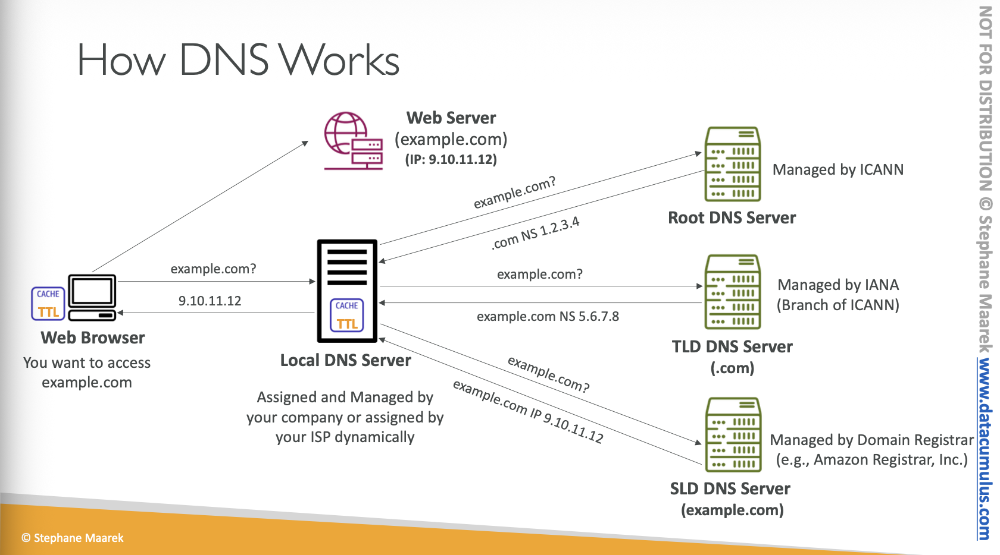
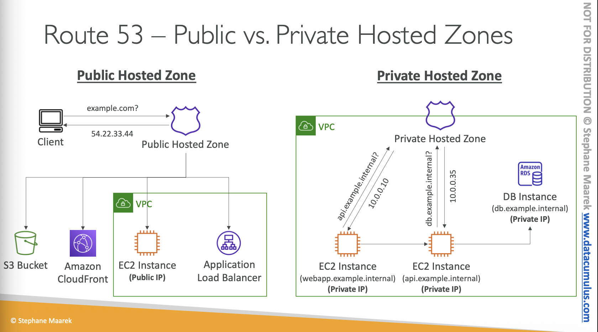

Route 53¶
What is a DNS?¶
-
Domain Name Systme wich translate the human friendly hostnames into the machine IP addresses
- wwww.google.com => 172.217.1836
- DNS is the backnbone of the internet
- DNS uses hierarchical naming structure
- DNS is a distributed database
- DNS uses caching to improve performance
- DNS uses UDP port 53
-
DNS Terminologies
- Domain Register
- DNS Records
- Zone File: containes DNS records
- Name Server: resolves DNS queries
- Top Level Domain (TLD): .com, .us, .in, .gov, .org,...
- Second Level Domain (SLD): amazon.com, google.com.
- Fully Qualified Level Domain

Whats is Amazon Route53?¶
- Amazon Route 53 is a highly available and scalable Domain Name System (DNS) web service
- Records:
- How you want to route traffic for a domain
- Domain/subdomain Name - example.com
- Value - IP address, another domain name, etc.
- TTL - how long DNS resolvers cache the information
- Routing Policy - how Route 53 responds to DNS queries
- Types:
- A Record: maps a domain name to an IPv4 address
- AAAA Record: maps a domain name to an IPv6 address
- CNAME Record: maps a domain name to another domain name
- The target is a domain name which must have an A or AAAA record
- Example: you can not create for example.com, but you can create for www.example.com
- MX Record: maps a domain name to mail servers
- TXT Record: used to store text information
- NS Record: specifies the authoritative name servers for a domain
- SRV Record: used to define the location of servers for specific services
- PTR Record: used for reverse DNS lookups
Route 53 - Hosted Zones¶
- A hosted zone is a container for records that defines how to route traffic to a domain and its subdomain
- Public Hosted Zone - containes records that specify hot to route traffic on the internet: application1.mypublicdomain.com
- Private Hosted Zones - contains records that specify how you route traffic within on or more VPC: application1.company.internal
